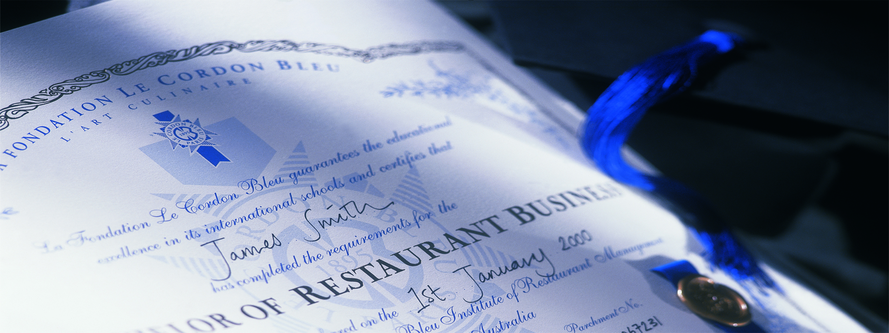

藍帶國際學院 Le Cordon Bleu International 藍帶國際學院是一所有著超過120年美食文化和傳統的國際學院，于1895年在法國巴黎成立， 至今已發展成為在全球20多個國家擁有35所國際分校，每年培養2萬多名來自100多個不同國家學員的國際教育機構。 藍帶國際學院國際校區遍布全球各大主要城市，如巴黎、倫敦、雪梨、阿得雷德、渥太華、惠靈頓、上海、高雄、東京、首爾等， 是一所包含廚藝培訓課程、國際酒店管理、國際餐飲管理等在內的大規模綜合學院，通過證書、文憑、學士、碩士等課程將創新創意與經典傳統進行充分地結合。 藍帶國際貿易（上海）有限公司，是隸屬于藍帶國際學院的直屬子公司。藍帶上海成立后， 一直致力于在中國大陸、香港、澳門及臺灣推廣法國美食文化及廚藝，并為酒店餐飲行業提供高水準的管理咨詢和培訓服務。 在過去的一個多世紀里，藍帶已經從最早巴黎的一所廚藝培訓學校壯大成為今天世界級的烹飪殿堂。 對非凡品質一如既往的追求、對未來的展望以及在開拓中的銳意進取鑄就了藍帶的輝煌。 在不到一年的時間里，我們的學員便有機會獲得一張藍帶的證書。蓋上藍帶的標簽就意味著取得了一張廚藝界的全球通行證； 躋身藍帶的殿堂，為事業的旅程開啟一扇通往成功的大門；在藍帶的殿堂里感受歷史沉淀出的文化，在歷史的輝煌中分享笑傲人生的旅程。 居廟堂而心天下。藍帶的旗下云集了眾多的品牌。在藍帶，人們不僅能感受到那份絕無僅有的奢華與尊貴，也能品味到午后咖啡陽光的愜意，抑或是面包房里記憶的香氣。 藍帶也將這份出世入世的情懷通過眾多的媒體、業界雜志、教育視頻、電視節目、廚藝交流以及一些更廣泛的領域同世界分享。藍帶，更有一種放眼世界的胸懷。 在藍帶的史冊里，記載了藍帶應邀接受的咨詢交流和藍帶主辦的超過50次的國際盛宴。 在和各國政府、大學、以及業界的交流、合作中藍帶所傳承的法蘭西精致生活的藝術在世界的舞臺上盡情綻放。 ◆ 讓卓越的傳統圍繞您左右 藍帶國際學院被公認為世界上首屈一指的廚藝學院。基于120多年的教學經驗，藍帶國際教學網絡一直致力于提供在餐飲、酒店款待業和行業管理方面的最佳實踐和堅實基礎。 藍帶畢業生也已成為藍帶卓越傳統的重要部分，憑借其在藍帶的學習與積累，他們將在嚴苛而又不斷變化的工作競爭環境中展現出獨特的優勢。 ◆ 廚藝大師和專家面對面授課指導 來自全球最優秀的廚房和米其林星級餐廳的藍帶廚藝大師每天給學生傳授他們的寶貴知識和經驗。他們不僅僅是廚藝導師，也將是鼓勵和支持藍帶畢業生發展的良師益友。 在藍帶國際學院，全球教學團隊還包括旅游業和酒店行業的大學教授、葡萄酒專家、國際知名人士等，他們無私分享知識和經驗，引領學員走向成功。 ◆ 接受世界級的一流教育 藍帶國際學院還提供現今最完整，最全面的經典法國料理、甜點技術的培訓，課程包含許多在世界級廚藝大師指導下的廚房實作教學時間。 藍帶國際學院配備了全球最先進的廚房設施與設備，為學生步入高級廚藝領域作好準備。 ◆ 行業尊崇證書 藍帶文憑是卓越品質的代名詞，在全球美食與美酒領域具有至高無上的地位。 ◆ 獲得一份偉大的職業 藍帶畢業生掌握了一身卓越技能，不僅能在世界頂尖的餐館、酒店或度假村開始令人興奮的事業，也可以成為美食記者、作家、講師、顧問或企業家等。 ◆ 成為藍帶國際校友網絡的一員 國際藍帶學院課程為學生開啟了激發卓越、創造、創新和個人致富的旅程，讓他們走向成功的職業生涯或追逐自己的人生目標。 隨著藍帶國際全球校區的不斷擴張，加入藍帶大家庭就相當于共享藍帶國際網絡的人脈和資源。 在過去的120多年中，藍帶國際學院培養了許許多多有名的畢業生， 其中包括Dione Lucas, Julia Child, Nancy Silverton, Nathalie Dupree, Eric and Bruce Bromberg, Allen Susser, James Peterson, Lydia Shire, Giada De Laurentiis, Gaston Acurio and Ming Tsai 這只是其中的一些而已。 ◆ 滿足將來美食和款待業的實際需求 藍帶國際學院課程均達到最新的和行業相關標準。伴隨創新和新科技， 藍帶不斷適應未來學術課程在廚藝、旅游及款待業的需求，使藍帶畢業生成為行業供不應求的寶貴人才。首頁 上一頁 下一頁